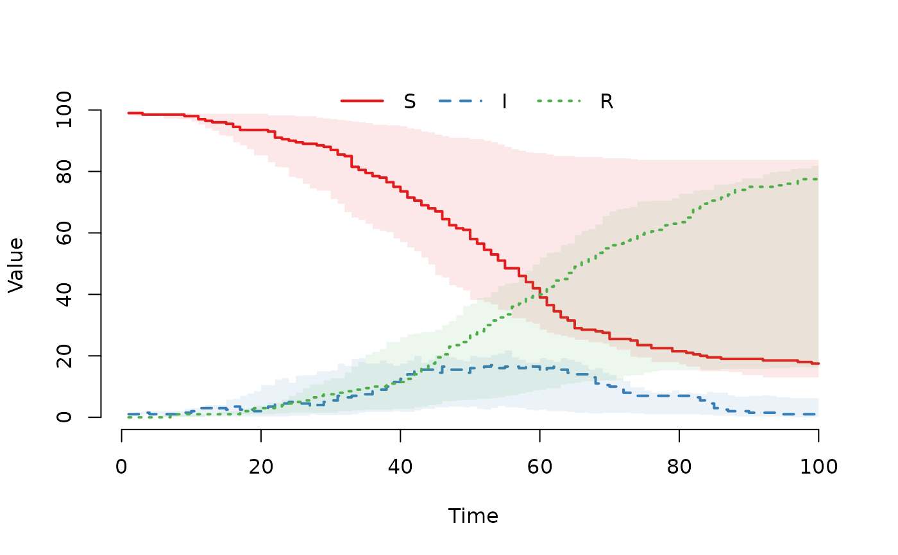

Run the SimInf stochastic simulation algorithm
Usage
run(model, ...)
# S4 method for class 'SimInf_model'
run(model, solver = c("ssm", "aem"), ...)
# S4 method for class 'SEIR'
run(model, solver = c("ssm", "aem"), ...)
# S4 method for class 'SIR'
run(model, solver = c("ssm", "aem"), ...)
# S4 method for class 'SIS'
run(model, solver = c("ssm", "aem"), ...)
# S4 method for class 'SISe'
run(model, solver = c("ssm", "aem"), ...)
# S4 method for class 'SISe3'
run(model, solver = c("ssm", "aem"), ...)
# S4 method for class 'SISe3_sp'
run(model, solver = c("ssm", "aem"), ...)
# S4 method for class 'SISe_sp'
run(model, solver = c("ssm", "aem"), ...)
# S4 method for class 'SimInf_abc'
run(model, ...)Value
SimInf_model object with result from
simulation.
References
S. Widgren, P. Bauer, R. Eriksson and S. Engblom. SimInf: An R Package for Data-Driven Stochastic Disease Spread Simulations. Journal of Statistical Software, 91(12), 1–42, 2019. doi:10.18637/jss.v091.i12 . An updated version of this paper is available as a vignette in the package.
P. Bauer, S. Engblom and S. Widgren. Fast Event-Based Epidemiological Simulations on National Scales. International Journal of High Performance Computing Applications, 30(4), 438–453, 2016. doi: 10.1177/1094342016635723
P. Bauer and S. Engblom. Sensitivity Estimation and Inverse Problems in Spatial Stochastic Models of Chemical Kinetics. In: A. Abdulle, S. Deparis, D. Kressner, F. Nobile and M. Picasso (eds.), Numerical Mathematics and Advanced Applications - ENUMATH 2013, pp. 519–527, Lecture Notes in Computational Science and Engineering, vol 103. Springer, Cham, 2015. doi:10.1007/978-3-319-10705-9_51
Examples
## For reproducibility, call the set.seed() function and specify
## the number of threads to use. To use all available threads,
## remove the set_num_threads() call.
set.seed(123)
set_num_threads(1)
## Create an 'SIR' model with 10 nodes and initialise
## it to run over 100 days.
model <- SIR(u0 = data.frame(S = rep(99, 10),
I = rep(1, 10),
R = rep(0, 10)),
tspan = 1:100,
beta = 0.16,
gamma = 0.077)
## Run the model and save the result.
result <- run(model)
## Plot the proportion of susceptible, infected and recovered
## individuals.
plot(result)
